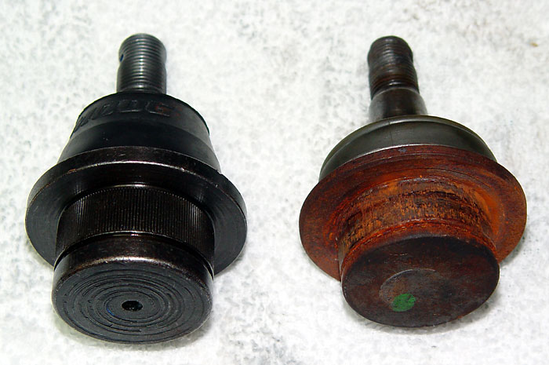
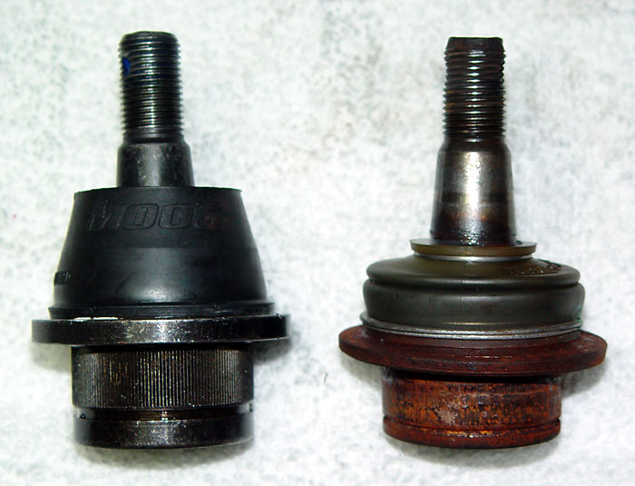

|
Ball Joints and Steering Links |
|
The factory front suspension uses cheap, non-greaseable ball joints and steering joints. There has been a TSB issued regarding Gen 2 tie rod end failures. When I switched over the DJM control arms, I was happy to discover that everything was greaseable. But when I switched back to the stock arms, I just could not go back to the stock joints. Moog to the rescue. Moog makes very high quality, greaseable ball joints and steering joints for the F150. They come complete with new hardware and quality dust boots. The stock upper control arm ball joints cannot be replaced, so Moog makes an entire replacement control arm (with replaceable ball joints). It's hard to get excited about ball joints and such, but the Moog pieces are awesome. They have double-socket bearings that are designed so that the old grease is forced out each time they are lubed. They have a beautiful finish, thick high quality boots, and come with all new hardware. Here is a comparison of stock and Moog lower ball joints:  The Moog joint is beefier in every way.  Here are the Moog part numbers and pricing from Rock Auto:
|
||||||||||||||||||||||||||||||||||||||||||||||||||||
|
Spicer apparently makes even higher-quality parts, but I haven't found the part numbers or where to purchase them.
If you have this info, please send it to me.
A useful, but oversimplified set of videos on ball joint replacement is here. |
|
ball joints and steering links |
|
The factory front suspension uses cheap, non-greaseable ball joints and steering joints. There has been a TSB issued regarding Gen 2 tie rod end failures. When I switched over the DJM control arms, I was happy to discover that everything was greaseable. But when I switched back to the stock arms, I just could not go back to the stock joints. Moog to the rescue. Moog makes very high quality, greaseable ball joints and steering joints for the F150. They come complete with new hardware and quality dust boots. The stock upper control arm ball joints cannot be replaced, so Moog makes an entire replacement control arm (with replaceable ball joints). It's hard to get excited about ball joints and such, but the Moog pieces are awesome. They have double-socket bearings that are designed so that the old grease is forced out each time they are lubed. They have a beautiful finish, thick high quality boots, and come with all new hardware. Here is a comparison of stock and Moog lower ball joints:
The Moog joint is beefier in every way.
Here are the Moog part numbers and pricing from Rock Auto:
|
||||||||||||||||||||||||||||||||||||||||||||||||||||
|
Spicer apparently makes
even higher-quality parts, but I haven't found the part numbers or where
to purchase them. If you have this info, please send it to me.
A useful, but oversimplified set of videos on ball joint replacement is here. |